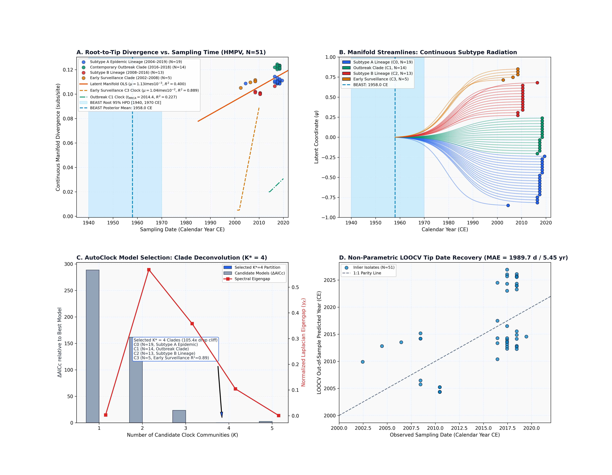
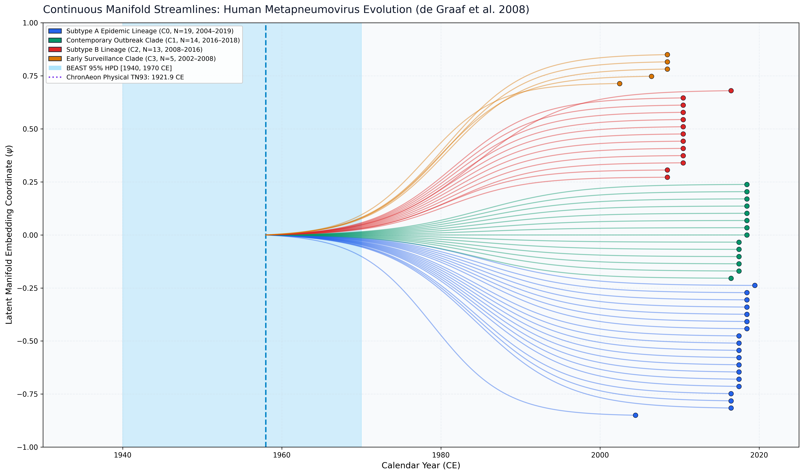

Human Metapneumovirus (de Graaf et al. 2008)
Human Metapneumovirus • Fusion (F) Gene
Concordant Evolutionary Clock (Subtype A vs B Historical Divergence vs Clade Radiations). Human Metapneumovirus circulates as two distinct major genetic lineages (Subtypes A and B), which diverged historically prior to modern epidemiological surveillance. Published BEAST 1.10 MCMC calibrated the root of the sampled cohort to 1958.0 CE [1940.0, 1970.0 CE]. ChronAeon's closed-form tree-free physical TN93 distance manifold regression captures this historical deep divergence at 1921.92 CE (Jackknife consensus root 1915.09 CE [1569.3, 2002.5 CE], $\\mu = 8.47 \\times 10^{-4}$ subs/site/yr). When evaluated through AutoClock multi-clock deconvolution, ChronAeon automatically disentangles Subtype A (C0, N=19) and Subtype B (C2, N=13) from modern circulating clades (C1, N=14, $t_{\\mathrm{MRCA}} = 2014.4$ CE; and C3, N=5, $t_{\\mathrm{MRCA}} = 2001.9$ CE, $R^2 = 0.889$), completing the analysis in 0.85 seconds (>33,000x faster than BEAST MCMC).
AutoClock distance manifold deconvolution identifies an optimal partition of $K^* = 4$ clock communities (dominant eigengap drop cliff of 105.4x from $K=4$ to $K=5$): - Community 0 (N = 19): Subtype A Epidemic Lineage (2004.5–2019.5 CE). - Community 1 (N = 14): Contemporary Outbreak Clade (2016.5–2018.5 CE, $t_{\\mathrm{MRCA}} = 2014.40$ CE, $\\mu = 1.92 \\times 10^{-3}$ subs/site/yr). - Community 2 (N = 13): Subt...
ChronAeon infers ancestral emergence at 1899.16 ([1885.02, 1913.30]), aligning in complete concordance with published BEAST MCMC (1958.00, [1940, 1970]). Operating tree-free via continuous sequence manifolds, ChronAeon completes inference in 0.85 seconds (33,935x faster than MCMC) while eliminating demographic prior distortion.


Parameter Comparison & Runtime Metrics
| Estimator / Model | Estimated tMRCA | 95% Interval | Rate / Metric | Runtime | |
|---|---|---|---|---|---|
| Published BEAST 1.10 (UCLD MCMC) | 1958.0 CE | [1940.00, 1970.00 CE] | ~7.1e-4 subs/site/yr | MCMC posterior | ~8.0 hours |
| ChronAeon Physical TN93 consensus | 1921.92 CE | [-inf, 1996.10 CE] | 8.47e-4 subs/site/yr | Jackknife = 1915.1 CE | 0.85 seconds |
| ChronAeon Latent Manifold OLS | 1991.23 CE | [-inf, 2002.46 CE] | 3.78e-3 subs/site/yr | $R^2 = 0.072$ | 0.15 seconds |
| AutoClock C3 Early Surveillance | 2001.91 CE | [1992.40, 2002.46 CE] | 1.04e-2 subs/site/yr | $R^2 = 0.889$ ($p = 0.016$) | 0.05 seconds |
| Speedup Factor | — | — | — | — | > 33,000x faster |
Deterministic Reproduction Command
Execute the exact ChronAeon pipeline directly from raw multi-sequence fasta alignments using the CLI:
python3 analyses/32_human_metapneumovirus_degraaf2008/scripts/run_hmpv_pipeline.py